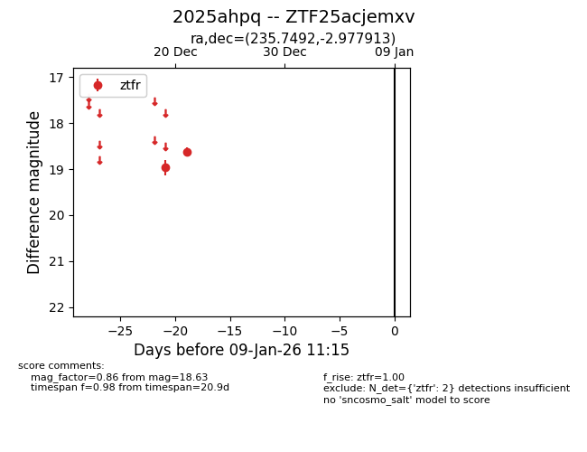
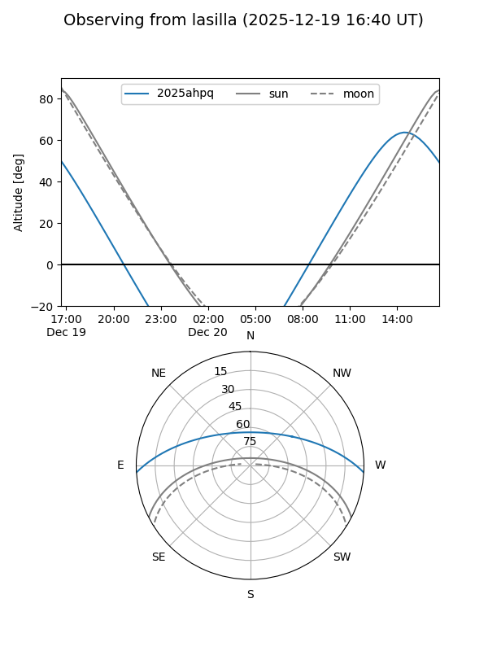
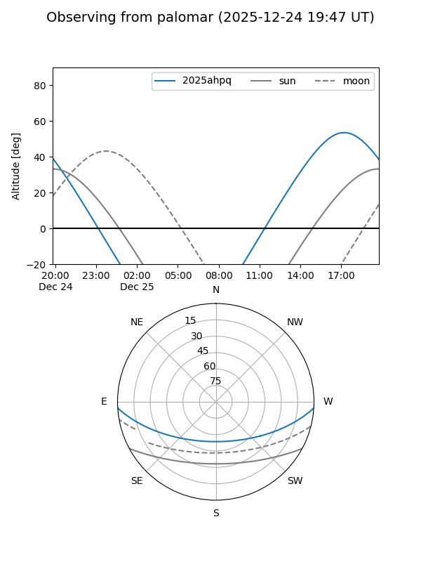
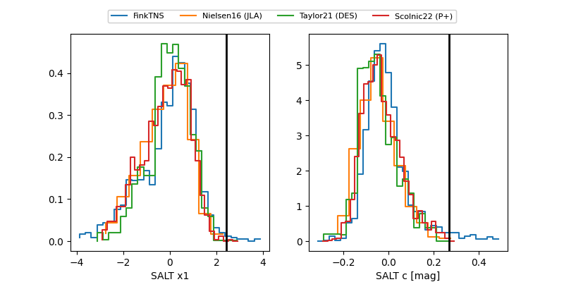

2025ahpq
Target 2025ahpq at 2025-12-24 16:17
Aliases and brokers:
FINK: fink-portal.org/ZTF25acjemxv
Lasair: lasair-ztf.lsst.ac.uk/objects/ZTF25acjemxv
ALeRCE: alerce.online/object/ZTF25acjemxv
TNS: wis-tns.org/object/2025ahpq
YSE: ziggy.ucolick.org/yse/transient_detail/2025ahpq
alt names
ZTF25acjemxv (ztf,fink_ztf)
2025ahpq (tns,yse)
Coordinates:
equatorial (ra, dec) = 235.7492,-2.97791
equatorial (HMS+DMS) = 15:42:59.80,-02:58:40.49
galactic (l, b) = (3.7311,+38.86548)
Flags:
Photometry:
last ztfr=18.63
2 ztfr detections
Lightcurve

Visibility


Additional plots
